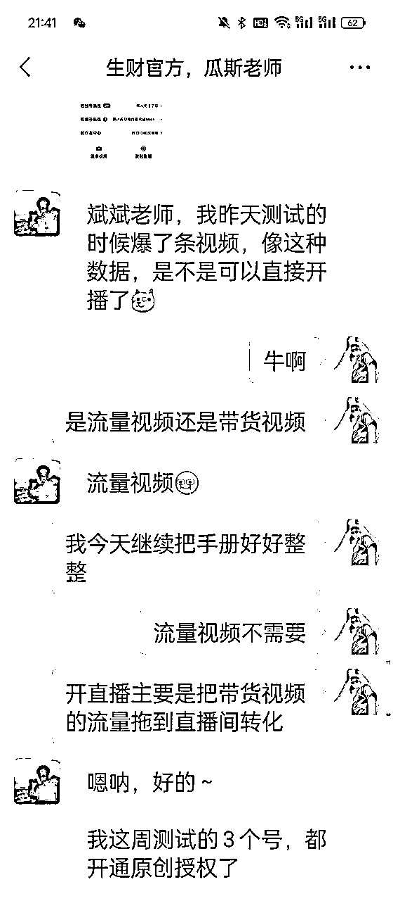
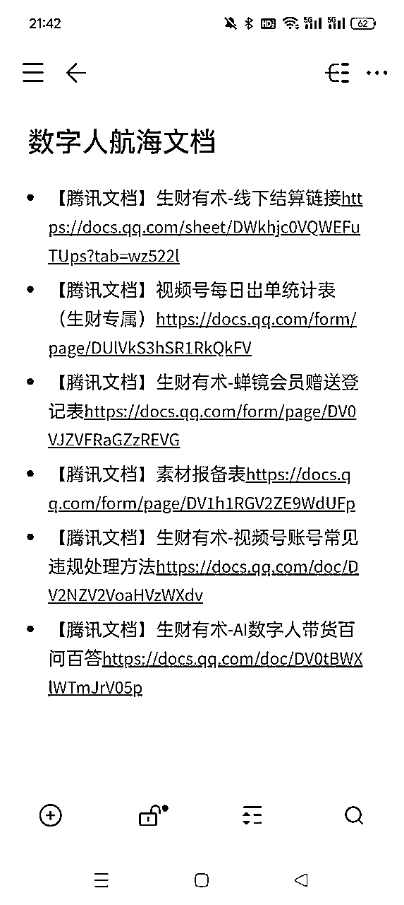
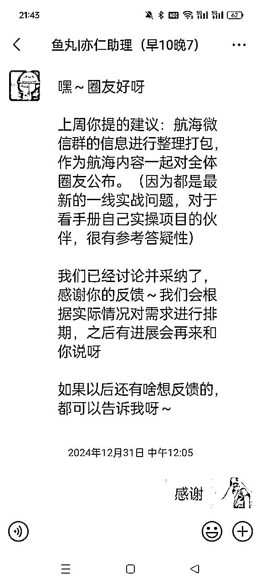

来源：https://zqqtm0kx8fq.feishu.cn/docx/VccjdohpWoP3z7xq3F3cUj80n4g
大家好，我叫斌斌，是24年12月这期数字人视频号航海教练。同时也是5月份和7月份视频号口播航海的船员。
算是同一个项目，但是不同视角的感受和收获却大不相同。
今天，我就从双视角复盘下心得体会。
先汇报下结果，本期视频号数字人带货，航海船员约1000人，上岸率79.65%，变现率21.56%，爆款率22.79%（有爆款视频的人数占比）
依稀记得5月份口播航海上岸率98%左右，不过那次是1000-2000元保证金，这次是200元，看来逼自己一把是真的有用的。
5月份刚参加航海时，我就惊叹航海手册真是写的太好了，把所有的关键执行路径、里面可能存在的坑都指出来了，对照着抄作业就可以。
不过与此同时，又产生了一些惧怕心理，这航海手册真的好长，全部看完一遍几乎都要两三个小时，那真的做起来100个小时的入门时间恐怕都不够，航海真的能取得结果吗？赚钱真的好难。
真的做起来才发现，实际意外情况比航海手册中写的还要多得多，能完全实践航海手册只是基础和入门，离真的跑通项目还有一段路要走，还有一些坑要踩。
例如剪映抠像到底怎么抠？直播时说什么？刚参加航海时都是一片茫然的，继续去翻剪辑特训的手册，去视频号广场刷别人是怎么直播的写下来再优化，一点一滴的积累，全部都要付出另外的时间精力。
等到12月作为教练，要自己写手册了，第一感觉是好像没那么多东西可以写，因为核心环节就那么几个。
真的开始写的时候，发现实在有太多东西要写了，因为每个核心环节下面还有很多小环节，甚至很多小环节还有各种各样的坑。
就拿混剪带货视频来举例，核心动作无非是把数字人口播视频和带货视频混剪一下，听起来看起来都非常简单，但是需要剪辑片段对应声音，处理字幕，处理画中画，要去重，甚至要自己去找些商品素材，每个小环节都是身体力行要去做的事，甚至还有坑，例如找的素材或者文案触发违规怎么办？真不容易。
生财官方对航海手册也是格外上心重视，本次对接的内容开发是瓜斯老师，不仅会对每个部分的内容阅读严格把关，力求小白也看的懂，还会真的实操一遍看这个方法是不是真的可行。例如，开通原创功能瓜斯老师就用手册中的方法进行实操验证:

受启发后，我也会全局考虑，手册内容先梳理大纲和核心环节，然后拆分每个核心环节的小环节，再附加一些常见问题注意点、容易踩的坑。
尽量把执行动作细分到最小颗粒度，最好是傻瓜式的自助执行手册，人人看着手册直接做就行，能用视频演示的就不用图片，能截图的就不纯文字描述。
报过很多知识付费课程，还没看到过项目培训手册做到像生财这么详细的，真的很难得。
所以新的伙伴看到这么长的手册完全不用害怕，不用着急，把航海手册当做执行手册，当做航线指引图，一步步来，别人几个月甚至几年的经验沉淀怎么可能几个小时或者几天全部学到手呢，一点点去咀嚼，日拱一卒的成长和前进。
大家的目标都是一致的，就是尽可能让更多人变现更多钱。但是做成一个项目是不容易的，有很多环节，还有很多坑，还得看当下最新市场阶段状态。
相比以前，本次航海也有较大变更，提前开放航海手册，很多伙伴其实就可以对照着先动起来了，也确实不少人先动起来了。
之前作为船员，我很想快一点提前一点，但是我不知道该干什么该怎么干，我只能按照之前准备工作指引去准备设备和账号。
这次提前开放手册，有了明确的前进方向，也能比较深刻的分析项目到底适不适合自己，不行就换船呗。
作为教练我在思考的是，为了尽可能帮更多人拿到结果，我能做的是什么？
我能做的是尽可能帮大家多做一点动作，让大家少做一点动作，动作越少，越不容易变形，成功率越高。
所以我一次又一次的审视执行动作和流程，看有没有什么能提前准备的，
例如开通原创功能的口播素材，我会提前准备好一些爆款短文案文档，大家直接用。即创做数字人需要组织投放广告，一方面给大家制作铲子教程，另一方面大家可以直接加入我的组织进行创作。并且把高佣供应链准备好，次日结算，给人勇气和信心...
本次除了航海手册外，一共涉及6个在线文档，每个文档都各有作用，解释清楚作用和使用可能都要不少时间，萌虎老师也说航海需要这么多文档还是第一次，不过大家都有个共识:只要是对航海结果有帮助的事，麻烦那也值得做。

我的最终目标其实是:假如一个项目拆分后有100个动作，一开始船员只需要做1个动作（其他我全部准备好），拿到正反馈有了信心，慢慢变为2个3个，一步步增加。有点理想情况，但是我觉得可以作为努力的方向。
大家都知道航海分为2个群，一个交流群提问答疑，一个禁言群发布重要信息。
视频号是一个信息孤岛，没有第三方平台可进行爆款数据查询，一个人找素材非常花时间，所以一方面会在禁言群轮播广场正在爆的爆款素材，另一方面也建议生财官方组织视频号赛道的细分风向标板块。在此，感谢孟总团队的素材和供应链支持。
交流群的教练们都特别负责给力，我看船员们的问题不少都是秒回，大部分问题都是几分钟都有回复了。
我之前5月份参加航海的时候，对于提问是小心又焦虑，一方面害怕自己的提问太小白太傻，另一方面又害怕得不到回复一直卡壳没法继续行动。本次也有部分船员私聊我问问题，问原因说是群里大神太多不好意思问小白问题，其实根本没关系，每个人起点不同资源不同。没必要和别人比，和自己比就好。
并且微信群沉淀了大量非常有价值的资料，大家都是在一线实战遇到的最新问题和数据反馈，实践是检验真理的唯一标准，包括例如看视频每分钟流速的小工具等等。
在5月份作为船员参加航海时，我会把微信群所有的聊天记录翻一遍，看看大家遇到了什么问题，教练是如何回答如何解决的，有没有最新好用的一些工具或者方法技巧，非常干货满满，手册再详细也无法实时更新，市场却是在实时变化的，一群人同行终将更容易获得胜利。
12月份做教练时，我也觉得很多回答是非常有价值的，值得群体性学习思考，于是跟鱼丸建议对航海群微信群聊内容进行记录并开放给大家，方便更好的实战，这个建议也受到了采纳：

为什么把几个词放在一块，因为是紧密相关的。有正反馈才能坚持，坚持了往往才可能有正反馈，否则就需要强大的心力去坚持。
之前做公众号爆文项目连续3个月日更，很多人问我怎么做到的？我说当你知道今天花1个小时写文章就能赚千八百的时候，你也可以。
我觉得这是一种正反馈和确定性，有正反馈才能坚持，否则就需要强大的心力，而持续不断的心力又需要不断做让自己爽的事。
所以本次手册加入了情绪和激励的部分，分析之前这个项目百人实战没变现的一些共性原因，方便大家对照和自我修正。
跑通项目的伙伴八仙过海各显神通，没跑通的伙伴却也逃脱不了那么几个共性原因，甚至不止是这个项目的特性，而是所有项目的共性。是人本身的一些弱点。例如：没有基础的执行量，今天做明天就想看到结果...
做项目的第一步是选项目，选错了无疑在错误的方向狂奔。
生财挑选的项目都是当下比较靠谱的，生财会对项目进行考核筛选和内部立项，不是所有项目都能拿来航海的，一定是当下市场环境普通人相对容易变现的，我想这也是为什么航海项目一直在持续变更的原因，总有些项目越来越难不适合入场，也有些项目会冒出来是红利期。
但是选项目对于小白来说太难了，但又是至关重要的，如果你不知道做什么项目，不妨随便参加一个生财的航海，这边的项目都是比较靠谱的。
我报过不少项目知识付费课程，不夸张的说，生财的航海手册是最详细的，不仅有术，也有道，会讲底层逻辑，市场分析，以及详尽的手把手的操作教程。
我加入生财后做的项目，闲鱼二手书、公众号爆文、视频号带货，其实全都是从生财航海手册里选的。
因为手册会有专业的内容开发老师去一点点的打磨，从小白的视角，从老师的视角等各个维度去雕琢，去实操和测试，这些老师身经百战，看过无数个项目，最后呈现给大家的作品自然也是干货中的干货。
毫不夸张的说，生财航海的教练答疑比外面很多专项知识付费课程还要积极和专业，首先，这些教练都是经过生财的考察和筛选，在一线市场实战的，获取的是最新一手的资讯，实践出真知。
并且在生财的共创体系下，教练的付出不同，得到的龙珠碎片回报也不同，大家是一个团队，是一起往群体变现的方向去努力，会更加积极、用心，输出干货。
航海期间可以不限次数的答疑，平时私下去链接根本不会有这么好的机会，大家都在忙着搞钱，哪有时间和精力去事无巨细的给别人答疑的，顶多简单说几句也是很客气了。
正是因为生财航海的体系设计，才有了这样一群跑的快一点的人带着一群人一起前行，非常宝贵难得。
没有一个项目适合所有人，也没有一个人适合所有的项目，我们不需要跑通所有的项目，十个里面跑通一两个然后去放大，足够了。
但是在公域平台，很多人为了招生，各种P图夸大割韭菜，都不用去实操，项目根本就不行，做不出结果甚至打击自信怀疑自己。但是生财的航海不会，已经被经验丰富的官方筛选过一遍了。
市场上各种天花乱坠的项目，动辄卖一两千元，贵的甚至上万元，还不一定靠谱，即使靠谱还不一定适合自己，跑通项目要等到猴年马月？普通人有多少个额外的几千块拿去试错？
生财的航海免费，并且有保证金驱动行动力，有一群人同行互相交流激励。做成一个项目是很难的，但是旁边有人做成了，那无疑是莫大的激励和信心，证明这条路可行，航海过程中也确实证明了这一点，出结果多的航海群然后就会互相激励、正向循环，出更多结果。
最后，感谢生财这片孕育财富的土壤，感谢并肩前行的圈友战友，2025年，扬帆正当时。